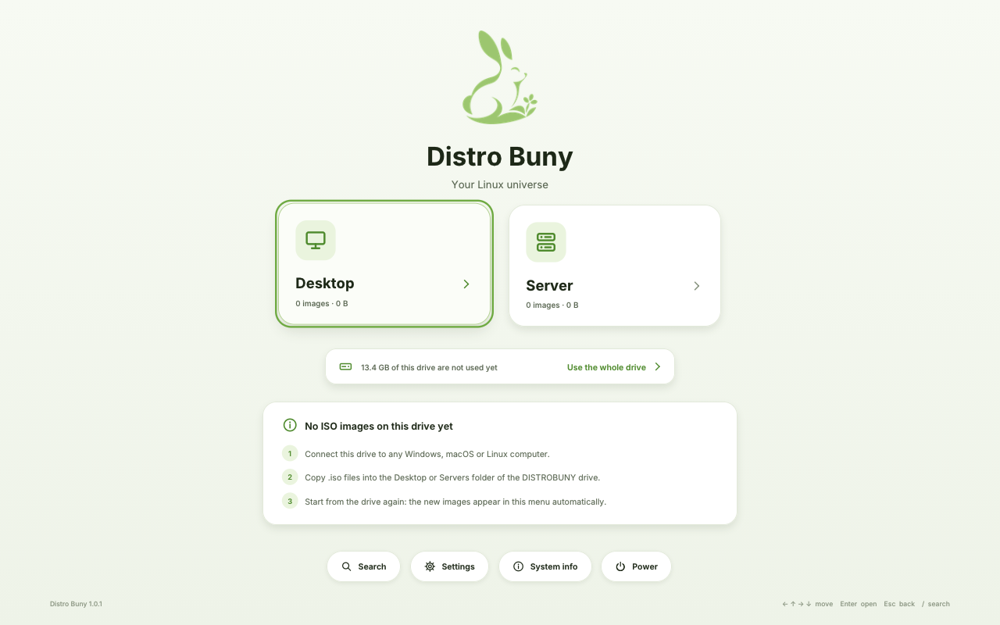
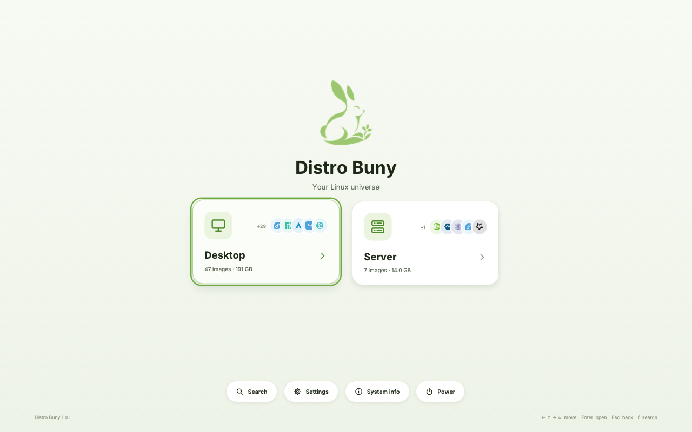
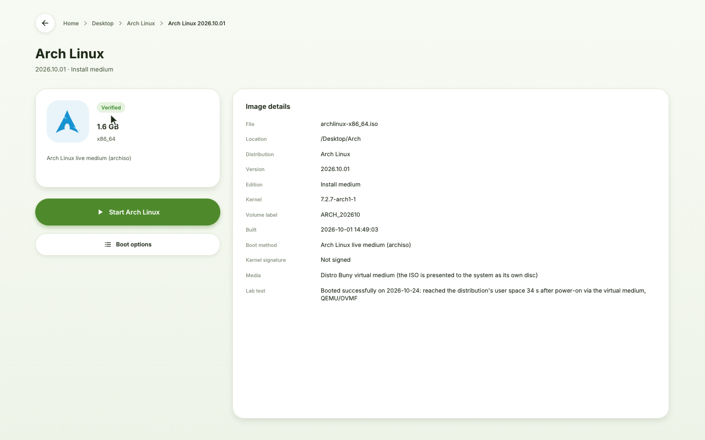

User guide
Distro Buny turns one USB stick into a boot menu for many Linux systems.
You copy ordinary .iso files onto the stick. When a computer starts
from the stick, Distro Buny shows them as cards, and you start the one you
choose. Your ISO files stay ordinary files that you can add, rename or delete
from Windows, macOS or Linux at any time.
@IMAGE_XZ@ from this folder, and a program to write it:
balenaEtcher (Windows, macOS, Linux) or Rufus (Windows).The file is a complete disk image. Write it to the stick as a whole ("DD mode"). Do not copy the file onto the stick, and do not use a tool's "ISO mode".
@IMAGE_XZ@ (no need to unpack it)..img.xz file. Rufus writes disk images in
DD mode by itself. If it ever asks, choose DD Image mode.Find the stick's name with lsblk (for example sdb). The wrong name destroys that disk's data.
xz -dc @IMAGE_XZ@ | sudo dd of=/dev/sdX bs=4M conv=fsync status=progress
If Windows offers to format the stick after writing, choose Cancel.
Optional: check the download against SHA256SUMS in this folder
(Get-FileHash in Windows PowerShell, shasum -a 256 on macOS,
sha256sum -c --ignore-missing SHA256SUMS on Linux).
Distro Buny starts with Secure Boot on or off. You do not have to change anything to start the stick itself. Secure Boot only decides which systems the menu can start:
Even distributions that support Secure Boot from their own DVD (for example Fedora, openSUSE, AlmaLinux or Kali) need Secure Boot off when they are started through Distro Buny @VERSION@, because their kernels are signed with their own keys.
The menu works with the keyboard (arrow keys, Enter to open, Esc to go back, / to search) and with a mouse or touchpad.
Etcher, Rufus and dd copy the 3.5 GB image as it is. On a bigger stick
the DISTROBUNY drive therefore first holds about 3 GB. Distro Buny fixes this
itself the first time you start from the stick:

Nothing is erased and no file is moved. If the power fails in the middle, start from the stick again: Distro Buny finishes the job before the menu appears (or offers it again if nothing had changed yet). You can expand before or after adding ISO files. The drive grows to at most 2 TiB.
.iso files into its Desktop or Servers folder, or into folders you
create inside them. Every folder becomes a category in the menu..distrobuny folder.New images appear in the menu the next time you start from the stick. Download ISO files only from each distribution's official website.

Open a category, choose an image, and press Start. The image page shows the distribution, its version, how it will be started, and whether it was tested. Boot options lets you choose another entry of the image (for example an installer instead of the live system) and Safe graphics for graphics cards that show a black screen.

Every card shows a badge:
| Badge | Meaning |
|---|---|
| Verified | This exact image booted in the Distro Buny test lab. |
| Ready | Distro Buny knows this kind of system and how to start it. |
| Best effort | A Linux family Distro Buny does not know yet. It tries the image's own boot entry and asks you first. If the system stops with an error, simply restart the computer. |
| Needs Secure Boot off | Secure Boot is on and Distro Buny cannot start this system's kernel. Switch Secure Boot off in the firmware settings to start it. |
| Erases a disk | The image installs itself or a system automatically, possibly without asking. Distro Buny asks you to confirm first. |
| Damaged | The file is not a readable ISO image, usually an incomplete copy. Copy it again. |
Distro Buny recognises a system by how it starts, so new releases of these distributions keep working. Tested in the lab (virtual machines) with version @VERSION@:
| Distribution | Tested editions | Secure Boot on? |
|---|---|---|
| Ubuntu | Desktop, Server, Kubuntu, Xubuntu, Lubuntu, Ubuntu MATE, Budgie, Unity, Cinnamon, Kylin, Studio, Edubuntu | yes |
| Linux Mint, Zorin OS | Mint Cinnamon and Xfce, Zorin OS Core | yes |
| Pop!_OS | standard, NVIDIA | no |
| Debian | netinst installer (graphical and text) | no |
| Kali Linux, Parrot OS | Kali live, Parrot Home | no |
| MX Linux, antiX | MX Xfce, antiX full | no |
| Arch Linux, EndeavourOS, CachyOS, Omarchy, BlackArch, Manjaro | installers and live images | no |
| Fedora, Bazzite, Nobara | Workstation, KDE, Server, IoT, Silverblue, Kinoite, Atomic desktops; Bazzite (also NVIDIA) | no |
| AlmaLinux, CentOS Stream | installer (boot) images | no |
| openSUSE | Leap 16, Tumbleweed, MicroOS, Leap Micro | no |
| Alpine Linux | standard (started as "Best effort") | no |
| Slackware | installer DVD (see below) | no |
| Void, Gentoo, NixOS, GNU Guix | live and installer images | no |
Should also work (same start-up method as tested images, not tested themselves): elementary OS, Linux Lite, KDE neon, Debian live and DVD images, Kali's installer ISO, Tails, Clonezilla, GParted Live, SystemRescue, Garuda, Rocky Linux, Red Hat Enterprise Linux, Fedora Spins.
Slackware: the installer starts normally. When setup asks for the source, choose
Install from a Slackware CD or DVD, then manual and custom, and type
/dev/loop200 (Distro Buny's virtual DVD). The image's page in the menu says the same.
Do not work: Qubes OS; Windows, BSD, 32-bit and ARM images.
| Problem | What to try |
|---|---|
| The computer does not offer the stick | Enable USB/UEFI boot in the firmware settings, try another USB port, or switch off "CSM / Legacy only" mode. |
| "Secure Boot blocked this system" | Choose Restart into firmware settings and switch Secure Boot off, or use a distribution signed by Canonical (Ubuntu and its flavours, Linux Mint, Zorin OS). |
| Black screen after starting a system | Boot options → Safe graphics. |
| A new ISO shows Damaged | The copy is incomplete: copy it again and eject the stick properly. |
| "The file is fragmented" | Copy the ISO again (a fresh copy is usually in one piece) or free some space first. |
| DISTROBUNY shows only 3 GB | Start from the stick and choose Use the whole drive (section 4). |
| Anything else | Press Esc while the stick starts and choose Distro Buny (diagnostic mode); the menu's log page lists recent events. |
Distro Buny @VERSION@ · image SHA-256 @IMAGE_SHA@ · free software under the GNU GPL, version 3 or later; see the folder "Licenses and source code".